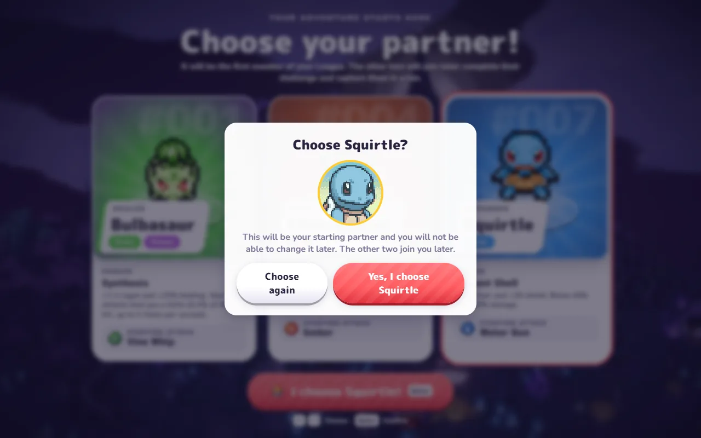
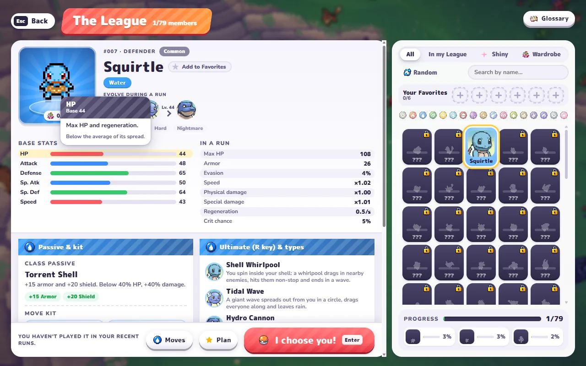

Opens pokebonk.com in a new tab · no account, no email. The game only runs there — other sites’ embeds stay blank.
PokeBonk drops you into a 3D Kanto with one partner and a field full of wild Pokemon. Your partner throws the attacks; you decide where to stand. Everything on this page came out of a guest run we did today — the starter cards, the mode list, the stats on the Squirtle screen, and the three places the game will catch you out in your first ten minutes.
151Kanto Pokemon in the Pokedex, which is where the count started and stopped
79Partners you can add to your League, one per run family
3Modes: Classic, Survival, and a co-op beta for two to four trainers
4Regions in Season 2, each at Normal, Hard or Nightmare
The short version
What is the PokeBonk game?
PokeBonk is a browser game that hands you one partner Pokemon and a horde that never thins out. You do not pick attacks. Your starter fires at whatever gets close, and your job is spacing: walk the ring, keep the crowd in front of you, scoop up what they drop, and take a card each time the experience bar fills.
It belongs to the survivors genre — the loop Vampire Survivors made standard, with the camera behind your Pokemon instead of above it. Megabonk proved in 2025 that the formula survives the move to 3D, and PokeBonk applies the same template to Pallet Town and the 151 species that shipped with Red and Blue.
Charcher, a solo developer, built it. The legal notice on the site says the project is unofficial and non-commercial — no ads, no purchases, no donations — and credits the sprite work to PMD SpriteCollab under a non-commercial licence. Worth reading before you go hunting for the shop that sells extra lives, because there isn't one.
The menu we landed in showed 151 Pokedex entries, 79 slots in the League, 228 achievements, four regions, and a build number in the corner: v0.8.55.
First run
Your first PokeBonk run, in five steps
1. Enter as a guest
The welcome panel has three ways in. Guest wants nothing: no email, no password, no waiting for a mail. The panel says your progress is saved on the server and tied to the device you are on, and you can turn the guest into a named account later if the game sticks. Guests do not appear on the seasonal leaderboard — that is the one thing you give up.
2. Pick a partner
Three cards, each printed with a passive and a starting attack. The label above them reads like a promise and a warning at once: this is the first member of your League, the other two join later, and you complete their challenge and catch them in a run to get them. Then a second dialog asks if you are sure, because you cannot change it afterwards.
3. Choose a mode
Play opens Classic. Survival sits directly underneath it, and co-op sits under that with a BETA tag and a note about two to four trainers. First run, take Classic: it has an end, which makes it the only mode where you can tell whether you are improving.
4. Move, dodge, collect
Arrow keys or WASD, one hand on the mouse for the camera. Wild Pokemon drop experience where they fall, so the crowd that chases you is also the shop you are walking through. Standing still is how runs end.
5. Take a card
Every level offers three: a new move, a stronger version of a move you already carry, or a vitamin that lifts a stat. You get one. Stacking a single move up to its late tiers beats spreading picks, and the passive on your starter is usually the hint about which one to stack.
Partner select
Which starter to pick in PokeBonk
The three cards, transcribed from the partner screen in our run. Passives are the reason to pick; the starting attack just decides what your first two minutes look like.
Partner
Role
Passive
Starting attack
Bulbasaur #001
Healer
Synthesis: +1.5 regen and +25% healing. Grass attacks heal 0.4% of HP per hit, up to five times a second.
Vine Whip
Charmander #004
Fiery Assault
Sea of Flames: +10% Fire damage, and +40% damage while you are under 40% HP.
Ember
Squirtle #007
Defender
Torrent Shell: +15 armor and +20 shield, and +40% damage while you are under 40% HP.
Water Gun
Take Bulbasaur to learn on. The healing passive forgives the two mistakes every new player makes — standing in the wave, and picking damage cards that do not fit. Charmander and Squirtle both pay out under 40% HP, which is a promise that the fun starts when you are nearly dead; that is a fine second run and a miserable first one.

What you get after tapping a starter: a second dialog that spells out the choice is permanent. Same session, October 26, 2026.
Squirtle's League card, opened in the same session, listed base stats of 44 HP, 48 Attack, 65 Defense, 50 Sp. Atk, 64 Sp. Def and 43 Speed, with evolution at level 24 and a second stage at 44. Armor and shield scale with Defense, so the Defender title is not decoration.

Squirtle's League card: base stats on the left, what they become in a run on the right, and the ultimate on R — Shell Whirlpool, then Tidal Wave, then Hydro Cannon. 1 of 79 slots filled.
Three ways in
Classic, Survival and co-op
Classic
The main mode. You clear zones, fight the guardian that closes each one, and finish at the shrine at the end of the region. Season 2 runs four: Viridian Forest, Rocky Desert, Storm Coast and Celestial Glacier. Each region is offered at Normal, Hard and Nightmare — the same map with meaner numbers and a shrine further away, so Nightmare is the same fight you already know, run longer.
Survival
One map, no finish line, a leaderboard of its own. Points come from KOs and from seconds survived, with milestones, Alphas and legendaries added on top. It is the mode to open once you stop caring about the shrine and start caring about how long the crowd takes to swallow you.
Co-op
Two to four trainers, Classic only, joined through a room link the host shares. It carries a BETA tag and one rule worth reading before you open a menu mid-fight: co-op does not pause. A downed teammate comes back when someone stands next to them and holds the revive key.
Keyboard, gamepad, phone
PokeBonk controls
The defaults. Settings has a Keys tab that rebinds all of it, controller support works in runs and in every menu, and the phone build switches to touch controls with a button for the ultimate.
Input
Action
W A S D / arrow keys
Move
Mouse
Swing the camera
Space
Jump
Shift
Slide
E
Interact — pickup, chest, throw a Poke Ball
R
Ultimate, once the meter is full
Mouse wheel
Zoom the camera
Esc
Pause menu
Gamepad
Supported — Y fires the ultimate
Phone
On-screen stick, tap the ultimate button
Two things the game tells you itself and nobody reads in time. The ultimate does not auto-fire: a banner appears when the meter is full and waits for you. And a menu does not mean a break — Classic pauses, co-op does not.
Between runs
What you keep when a run ends
A run ends and everything on the character screen goes with it, except the things designed not to. Stardust is the currency that survives; the Lab is where it goes. Items are discovered and paid for with Stardust, then show up in your Poke Balls and in Meowth's shop, which is how a bad run still moves the next one forward.
Vitamins work the same way in miniature: you start with room for a set number at a time and gain a slot with each level, so the ceiling on a run is really a ceiling on how many stat cards you can carry. The League holds 79 partners, achievements run to 228, and the season has its own leaderboard with badges, frames and Stardust for the top of it. Season 2 was live on the day we played.
The catch, and it is a fair one: guests sit outside all of that ranking. If the leaderboard is the reason you are playing, make the account before the first good run, not after.
When nothing happens
If the PokeBonk game won't load
You clicked play on another site and got an empty box
That is not your browser. The game refuses to be framed by any other domain, so the box stays blank while the page around it looks fine. Open pokebonk.com directly — the game is there, the frame is the thing that is broken.
The page loads but the game never starts
Most often a content blocker or a work or school filter: the build pulls its models and scripts from the same domain, and one blocked request keeps the loading screen up. Try a private window with extensions off, then a different network.
The keys do nothing
Click once inside the game first. The canvas only takes the keyboard after it has focus, and a tab opened in the background does not have it.
Phone controls feel wrong
Turn the phone sideways. The touch layout is built for a phone held long edge up, and the ultimate button lands where your right thumb already is. Bluetooth controllers work here too, same as on desktop.
Same name, different things
Which PokeBonk is which
Four things turn up for this name. Only the first is the game above.
pokebonk.com — the 3D survivor by Charcher: 151 Kanto Pokemon, free in a browser, no download.
PokeBonk: Monster Roguelite on Google Play — an unrelated mobile roguelite. Same name, no Kanto roster, no browser build.
Pokemon Bank — Nintendo's retired 3DS storage app. Looks similar typed fast, nothing else in common.
Megabonk — the 2025 survivors hit that proved the genre survives 3D. No connection beyond the formula.
FAQ
PokeBonk game FAQ
Where do I play the PokeBonk game?
On pokebonk.com, in any modern browser. It is not on Steam, not in an app store, and not playable inside another site — the developer blocks framing, so fan pages that look like they host it are showing you an empty frame.
Is PokeBonk free?
Yes. The site's own legal notice lists no ads, no purchases and no donations, and guest play asks for nothing but a click. There is no paid tier to find behind the menus.
Do I need an account to play PokeBonk?
No. Guest progress is saved on the server and tied to your device, so one browser keeps one save. An account is only needed for the seasonal leaderboard and for carrying progress to another device.
Which starter should I choose in PokeBonk?
Bulbasaur, for a first run. Synthesis heals you as you fight, which covers the mistakes you are going to make anyway. Charmander and Squirtle both get their damage bonus under 40% HP, so they reward players who already know how to stay alive at low health.
What is the difference between Classic and Survival?
Classic has zones, a guardian at the end of each one, and a shrine that finishes the run. Survival is one map with no end and its own leaderboard, scored on KOs and seconds survived. Classic is the mode where you can measure progress; Survival is the one you play once you have stopped needing to.
Can I play PokeBonk on my phone?
Yes. The build detects touch and puts a stick and an ultimate button on screen. Hold the phone sideways — the layout is built for that — and a Bluetooth controller makes it considerably easier.
Is PokeBonk multiplayer?
Partly. Co-op takes two to four trainers into Classic mode through a room link, and it is tagged BETA. It does not pause when you open a menu, and a downed player is revived by a teammate standing over them and holding the revive key.
Is PokeBonk an official Pokemon game?
No. It is an unofficial fan project by a solo developer called Charcher, and the site says so in its legal notice. It carries no ads or purchases, and the sprite work is credited to PMD SpriteCollab under a non-commercial licence.
Is the PokeBonk on Google Play the same game?
No. PokeBonk: Monster Roguelite is a separate mobile roguelite that shares the name. It is not the browser survivor, it does not use the Kanto roster, and it has nothing to do with pokebonk.com.